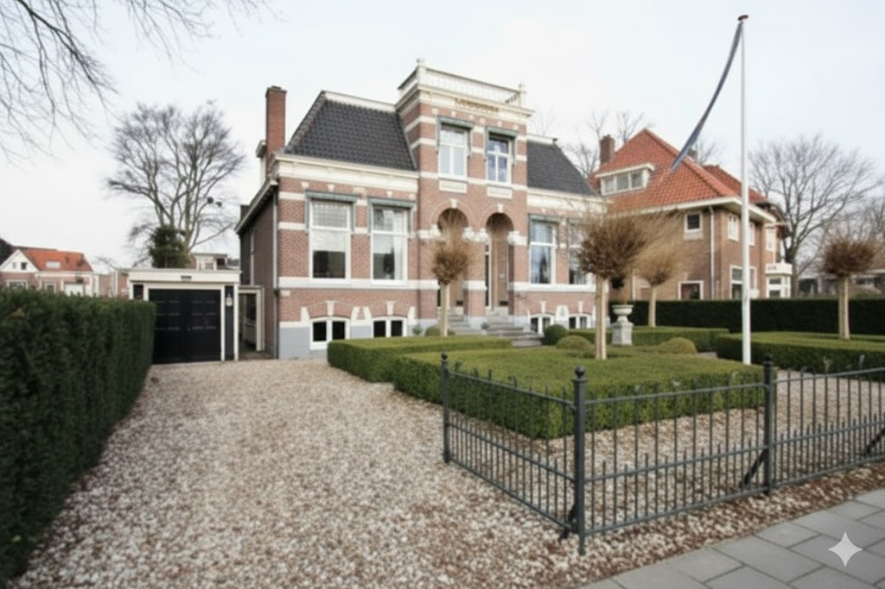

Onze diensten
Strategische oplossingen voor een toekomstbestendige zorgorganisatie.
Interim
Management
Strategisch interim management
Wij bieden stabiliteit in tijden van transitie. Of het nu gaat om een tijdelijk gat in de directie of een specifieke strategische uitdaging, wij leveren ervaren interim-professionals die direct waarde toevoegen.
- Crisismanagement
- Project- en programmamanagement
- Tijdelijke invulling van management posities

Advies
& Coaching
Organisatieadvies & teamontwikkeling
Een sterke strategie werkt alleen als de organisatie erachter staat. Wij adviseren over structuur, cultuur en processen, en coachen teams en bestuurders naar een hoger prestatieniveau.
- Cultuurverandering en teamdynamiek
- Begeleiding bij fusies en samenwerkingen
- Ontwikkeling van visie en meerjarenbeleid
Maatwerk voor uw uitdaging
Geen enkele zorgorganisatie is gelijk. Wij geloven in maatwerkoplossingen die aansluiten bij uw specifieke context en behoeften.
Plan een kennismakingsgesprek